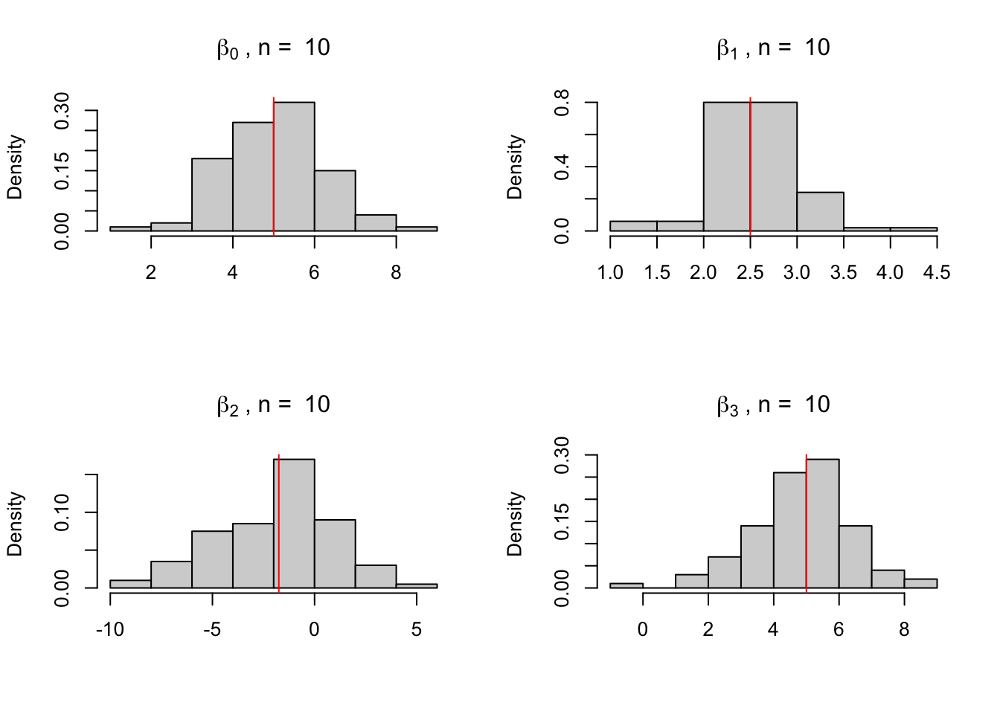
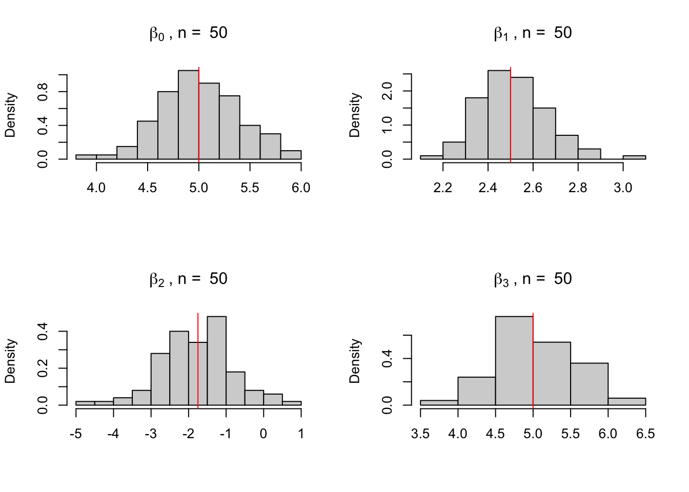
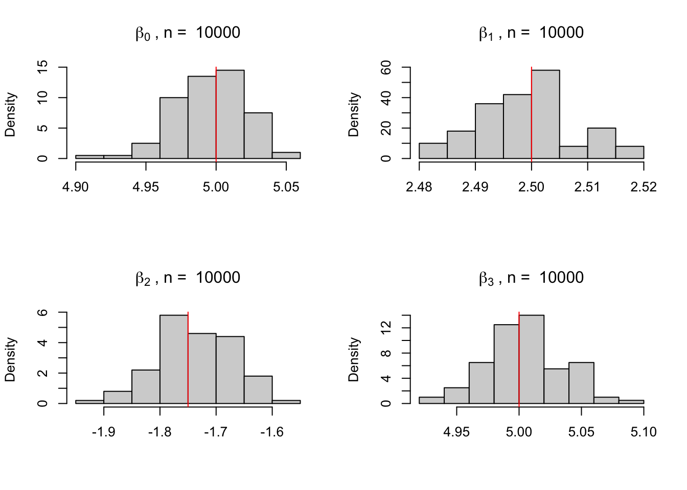
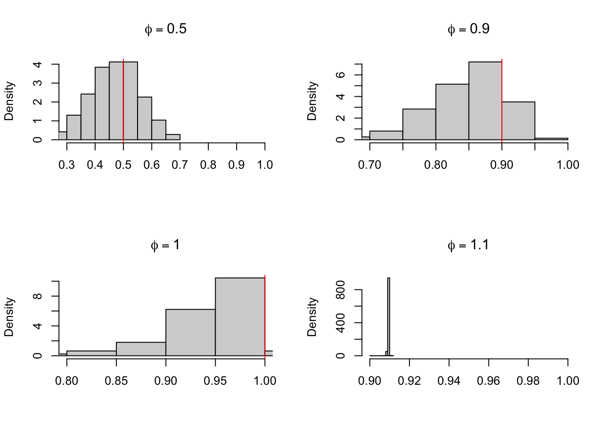
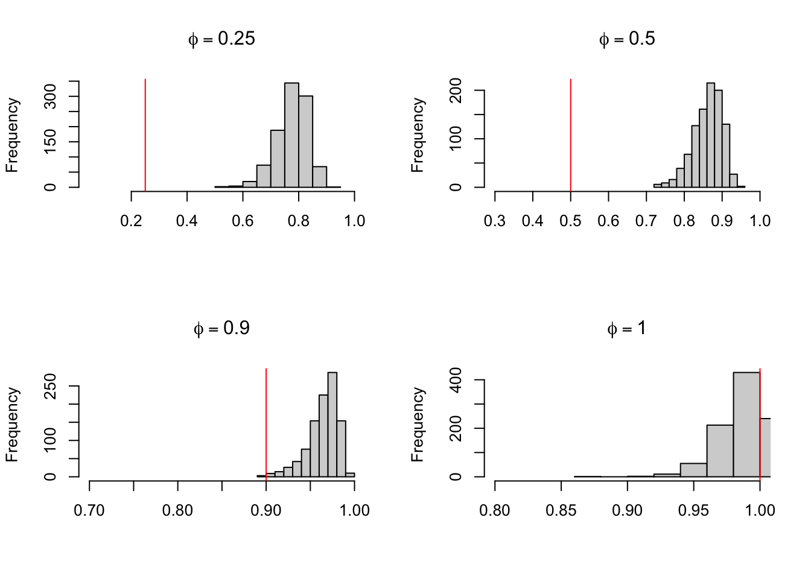
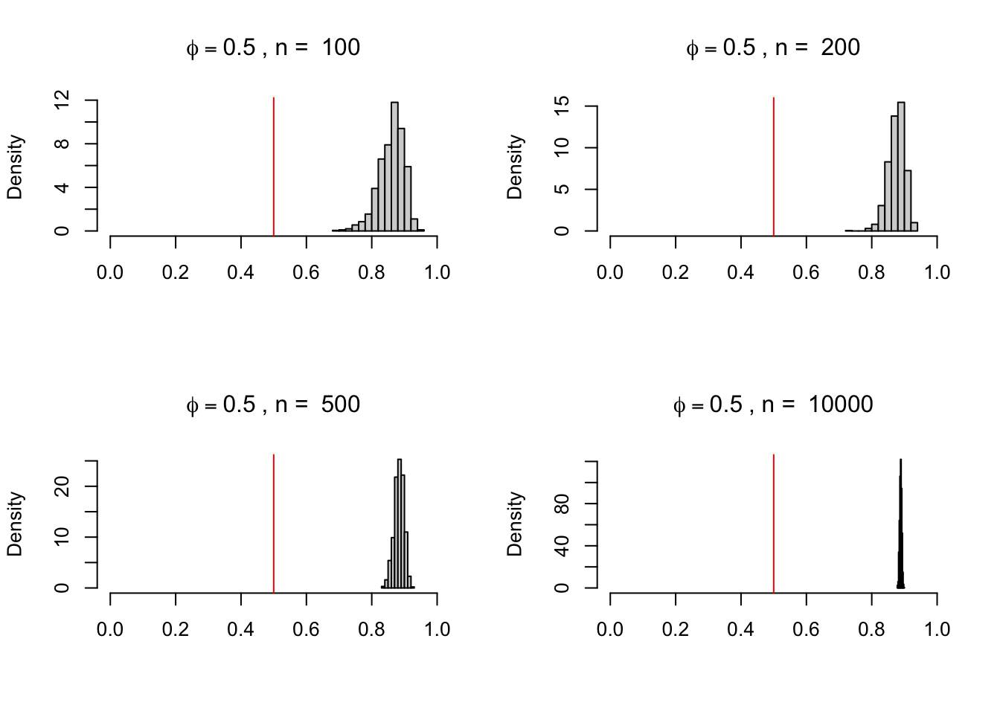

Neste post discuto e apresento simulações de alguns resultados assintóticos de MQO. Estes resultados permitem entender a distribuição dos estimadores MQO e o comportamento dos coeficientes à medida que o tamanho da amostra aumenta. Compreender esses resultados é fundamental para realizar inferências estatísticas precisas na análise de regressão.
econometria
tutorial-R
repost
Author
Vinicius Oike
Published
March 23, 2019
Disclaimer
Este é um repost antigo que fiz ainda na época do mestrado em economia. Apesar de intuitivo o código dos loops abaixo é muito ineficiente. De maneira geral, for-loops são melhores do que loops feitos com repeat; melhor ainda é montar funções e usar parallel::mclapply ou replicate. Além disso, é importante pre-definir o tamanho do objeto antes de um loop, e.g., x <- vector("numeric", length = 10000).
Mínimos Quadrados
A maior parte dos resultados assintóticos dos estimadores de mínimos quadrados (MQO) são um misto da LGN, do TCL e de outros resultados de convergência como o método delta e o teorema de Slutsky. Um resultado simples que podemos visualizar através de uma simulação é a propriedade de não-viés dos estimadores de MQO. Em linhas gerais, desde que o termo de erro seja ortogonal às variáveis independentes, os estimadores de MQO não serão viesados, i.e., os estimadores \(\hat{\beta}\) vão convergir para os verdadeiros \(\beta\). Dizer que eles são ortogonais costuma ser o mesmo que dizer que eles são independentes. Isto é, na prática queremos que a esperança condicional de \(u_{t}\), o erro, dado \(x_{t}\), as variáveis explicativas, seja nulo:
\[
\mathbb{E}(u_{t} | x_{t}) = 0
\]
Suponha que o modelo verdadeiro (o processo gerador de dados) seja da forma:
Se as variáveis \(x_{1}, x_{2}\) e \(x_{3}\) forem independentes de \(u_{t}\) então o modelo: \[\begin{equation}
y_{t} = \beta_{0} + \beta_{1}x_{1t} + \beta_{2}x_{2t} + \beta_{3}x_{3t}
\end{equation}\] fornecerá estimativas consistentes para os betas.
Call:
lm(formula = y ~ x1 + x2 + x3)
Residuals:
Min 1Q Median 3Q Max
-2.40891 -0.71728 -0.03212 0.67974 2.85561
Coefficients:
Estimate Std. Error t value Pr(>|t|)
(Intercept) 5.19288 0.18462 28.128 < 2e-16 ***
x1 2.55059 0.06534 39.035 < 2e-16 ***
x2 -1.79698 0.42362 -4.242 3.41e-05 ***
x3 4.58214 0.24240 18.903 < 2e-16 ***
---
Signif. codes: 0 '***' 0.001 '**' 0.01 '*' 0.05 '.' 0.1 ' ' 1
Residual standard error: 0.9608 on 196 degrees of freedom
Multiple R-squared: 0.9122, Adjusted R-squared: 0.9109
F-statistic: 678.7 on 3 and 196 DF, p-value: < 2.2e-16
Note que os valores estimados estão bastante próximos dos valores verdadeiros. Podemos ver o impacto que o tamanho da amostra tem sobre as estimativas fazendo um loop para diferentes tamanhos. Para conseguir resultados mais consistentes podemos gerar os valores do DGP várias vezes. Abaixo os dados são gerados e estimados 100 vezes para diferentes amostras com \(n = 10, 50, 10000\).
par(mfrow =c(2, 2))tabela <-matrix(ncol =4)for (n inc(10, 50, 10000)) { i <-0 X <-matrix(ncol =4, nrow =100)repeat{ x1 <-rnorm(n) x2 <-rbeta(n, 2, 5) x3 <-runif(n) y <-5+2.5* x1 -1.75* x2 +5* x3 +rnorm(n) fit <-lm(y ~ x1 + x2 + x3) coeficientes <-coef(fit) X[i +1, ] <- coeficientes i <- i +1if (i ==100) {break} } tabela <-rbind(tabela, colMeans(X, na.rm =TRUE))hist(X[, 1], freq =FALSE,main =bquote(beta[0]~", n = "~.(n)), xlab ="")abline(v =5, col ="red")hist(X[, 2], freq =FALSE,main =bquote(beta[1]~", n = "~.(n)), xlab ="")abline(v =2.5, col ="red")hist(X[, 3], freq =FALSE,main =bquote(beta[2]~", n = "~.(n)), xlab ="")abline(v =-1.75, col ="red")hist(X[, 4], freq =FALSE,main =bquote(beta[3]~", n = "~.(n)), xlab ="")abline(v =5, col ="red")}



A tabela abaixo mostra a média dos valores estimados para cada coeficiente
b0 = 5
b1 = 2,5
b2 = -1,75
b3 = 5
n = 10
5.092687
2.563573
-1.852012
4.862016
n = 50
5.011683
2.510650
-1.792762
5.019113
n = 10000
4.995774
2.499198
-1.736876
5.003811
MQO viesado
Processo não-estacionário
Um dos casos em que os estimadores de MQO se tornam viesados acontece quando o processo é auto-regressivo e não-estacionário, isto é, quando o DGP é da forma
em que \(|\phi| \geq 1\). O código abaixo simula o modelo acima mil vezes para diferentes valores de \(\phi\). Quando o processo é estacionário temos estimativas boas para o parâmetro, mas quando \(\phi = 1.1\) as estimativas tornam-se muito ruins. Quando \(\phi = 1\) temos um caso de raiz unitária que tem propriedades bastante específicas
library(dynlm)par(mfrow =c(2, 2))for(phi inc(0.5, 0.9, 1, 1.1)){ j =0 x <-c()repeat{ y <-0for(i in1:99) { y[i +1] <- phi * y[i] +rnorm(1) } y <-ts(y) fit <-dynlm(y ~lag(y)) phi_hat <-coef(fit)[2] x <-c(x, phi_hat) j = j +1if (j ==1000) {break} }hist(x, freq =FALSE,main =bquote(phi==.(phi)),xlim =c(phi -0.2, 1),xlab ="")abline(v = phi, col ="red")}

Erros ARMA
Quando os erros do modelo são autocorrelacionados os estimadores de MQO perdem algumas de suas boas propriedades. Ainda assim, desde que o erro seja ortogonal aos regressores os estimadores continuaram sendo não-viesados. Há, contudo, um caso em que os estimadores de MQO são viesados: quando algum dos regressores independentes é uma defasagem da variável depedente.
Isto acontece porque este tipo de autocorrelação implica que os regressores não são ortogonais aos erros. Tome o caso simples em que o erro \(u_{t}\) segue um processo AR(1) da forma
\[\begin{equation}
u_{t} = \phi u_{t-1} + \eta_{t}
\end{equation}\] em que \(\eta_{t}\) é ruído branco. E o modelo é \[\begin{equation}
y_{t} = \beta_{0} + \beta_{1}y_{t-1} + u_{t}
\end{equation}\] Agora note que \[y_{t - 1} = \beta_{0} + \beta_{1}y_{t - 2} + u_{t - 1}\] Reescrevendo a expressão do erro e substituindo na equação acima temos que: \[y_{t - 1} = \beta_{0} + \beta_{1}y_{t - 2} + \frac{u_{t} - \eta_{t}}{\phi}\] logo \(y_{t - 1} \propto u_{t}\), isto é, \(y_{t - 1}\) é correlacionado com o termo de erro \(u_{t}\).
Para exemplificar este resultado, o código abaixo simula a seguinte série 1000 vezes para diferentes valores de \(\phi\). O termo de erro segue um processo AR(1). Note como as estimativas \(\hat{\phi}\) são bastante ruins. Para remediar este problema teríamos que levar em conta a estrutura autoregressiva do erro no modelo.
par(mfrow =c(2, 2))for(phi inc(0.25, 0.5, 0.9, 1)) { j <-0 x <-c()repeat{ y <-0 erro <-arima.sim(n =100, model =list(ar = .7))for(i in1:99) { y[i +1] <- phi*y[i] + erro[i] } y <-ts(y) fit <-dynlm(y ~lag(y)) phi_hat <-coef(fit)[2] x <-c(x, phi_hat) j = j +1if (j ==1000) {break} }hist(x, main =bquote(phi==.(phi)), xlim =c(phi -0.2, 1), xlab ="")abline(v = phi, col ="red")}

Este resultado não muda assintoticamente, isto é, não importa qual o tamanho da amostra: as estimativas de \(\hat{\phi}\) serão viesadas. Na verdade, os resultados vão piorando à medida que cresce o tamanho da amostra. Abaixo mostro isto para o caso de \(\phi = 0.5\) e n = \(100, 200, 500, 10000\).
par(mfrow =c(2, 2))phi <-0.5for(n inc(100, 200, 500, 10000)){ j =0 x <-c()repeat{ y <-0 erro <-arima.sim(n = n, model =list(ar = .7))for(i in1:(n-1)) { y[i +1] <- phi*y[i] + erro[i] } y <-ts(y) fit <-dynlm(y ~lag(y)) phi_hat <-coef(fit)[2] x <-c(x, phi_hat) j = j +1if (j ==1000) {break} }hist(x,freq =FALSE,main =bquote(phi==.(phi)~", n = "~.(n)),xlim =c(0, 1),xlab ="")abline(v = phi, col ="red")}

Considerando a estrutura autoregressiva do modelo chegamos em estimativas melhores para os parâmetros. O código abaixo faz um ARMAX, isto é, uma estimativa de mínimos quadrados com erros ARMA. O modelo segue o processo \[\begin{align}
y_{t} & = \beta_{0} + \beta_{1}y_{t-1} + u_{t}\\
u_{t} & = \beta_{2} u_{t-1} + \eta_{t}\\
\end{align}\]
onde os valores foram definidos como \(\beta_{0} = 0\), \(\beta_{1} = 0.5\) e \(\beta_{2} = 0.7\).
par(mfrow =c(2, 2))n <-1000param <-matrix(nrow = n, ncol =3)j <-0repeat { y <-0 erro <-arima.sim(n = n, model =list(ar = .7))for(i in1:(n-1)) { y[i +1] <-0.5* y[i] + erro[i +1] } y <-ts(y) ly <-lag(y, -1) x <-ts.intersect(y, ly, dframe =TRUE) fit <-arima(x$y, order =c(1, 0, 0), xreg = x$ly) param[j +1, ] <-coef(fit) j = j +1if (j ==1000) {break}}hist(param[, 2], main =bquote(beta[0]==0~", n = 1000"), xlab ="", freq = F)abline(v =0, col ="red")hist(param[, 1], main =bquote(beta[1]==0.5~", n = 1000"), xlab ="", freq = F)abline(v =0.5, col ="red")hist(param[, 3], main =bquote(beta[2]==0.7~", n = 1000"), xlab ="", freq = F)abline(v =0.7, col ="red")